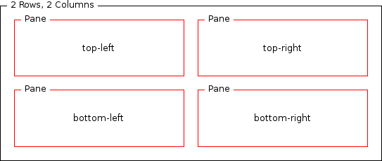
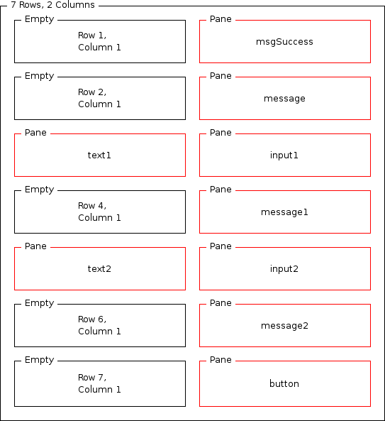
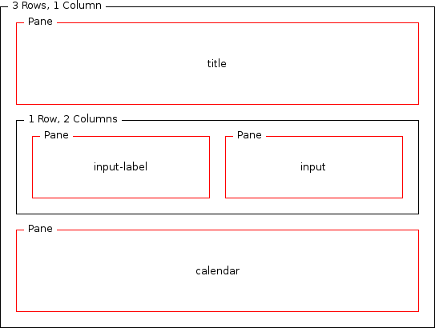

Additional layouts
The main.mlyt layout defines general structure of the page in our web
application. Among some other elements, it sets the region named 'content'. Several widgets
use additional layouts which specify a nested structures in that region.
This section provides you with the details of three such structures and their attributes.
Working with layouts 
- Create a new layout policy called '2x2.mlyt', with the variant selection criteria set to
'Default'
- Add a 2 rows by 2 columns grid
- Create required panes. Final layout structure should look like the one presented below.

- Create a new layout policy called 'validator.mlyt'. Set the variant selection criteria to
'Default'.
- Add a 7 rows by 2 columns grid
- Add required panes to recreate the layout structure shown below

- Create a new layout policy called 'date-picker.mlyt'. Set its variant selection criteria
to 'Default'.
- Create a 3 rows by 1 columns grid
- In the second row add 2 columns
- Add required panes to recreate the layout structure shown below

Layout attributes
- These are the format attribute values that you need to set for the panes in
2x2.mlyt
| Name | Width | Border Width | Cell Padding | Cell Spacing | Markup Optimization | Filter Usability Below |
|---|
| top-left | 100% | 0 | 0 | 0 | Never | 0 |
|---|
| top-right |
|---|
| bottom-left |
|---|
| bottom-right |
|---|
- The table below lists the format attribute values that you need to set for the panes in
validator.mlyt
| Name | Width | Border Width | Cell Padding | Cell Spacing | Markup Optimization | Filter Usability Below |
|---|
| msgSuccess | 100% | 0 | 0 | 1 | Never | 0 |
|---|
| message |
|---|
| text1 |
|---|
| input1 |
|---|
| message1 |
|---|
| input2 |
|---|
| message2 |
|---|
| text2 | 2 |
|---|
| button | 2 |
|---|
- Below are the format attribute values that you need to set for the panes in
date-picker.mlyt
| Name | Width | Border Width | Cell Padding | Cell Spacing | Markup Optimization | Filter Usability Below |
|---|
| title | 100% | 0 | 0 | 0 | Never | 0 |
|---|
| input-label |
|---|
| input |
|---|
| calendar |
|---|